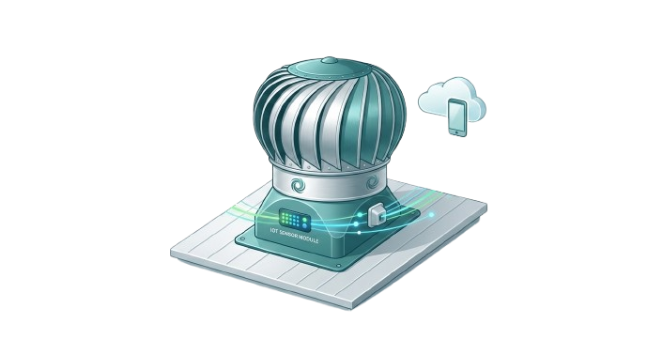

VENTALUX menyediakan berbagai fitur untuk memantau kinerja turbin ventilator secara realtime melalui website dengan teknologi Internet of Things.

Berikut merupakan fitur-fitur utama yang tersedia pada sistem VENTALUX.
Menampilkan data sensor secara langsung tanpa perlu melakukan refresh halaman.
Data ditampilkan dalam bentuk grafik sehingga perubahan nilai sensor lebih mudah dianalisis.
Seluruh data monitoring tersimpan sehingga dapat dilihat kembali melalui menu historis.
ESP32 mengirimkan data sensor ke website menggunakan jaringan internet.
Memantau tegangan, arus, serta daya generator DC secara realtime.
Menampilkan kecepatan angin dan RPM turbin ventilator secara realtime.
VENTALUX membantu proses pemantauan turbin ventilator menjadi lebih mudah, cepat, dan efisien.
Pengguna dapat memantau kondisi turbin kapan saja melalui website.
Sensor mengirimkan data secara realtime sehingga kondisi sistem dapat diketahui dengan cepat.
Data historis dan grafik membantu pengguna melakukan evaluasi terhadap performa turbin.